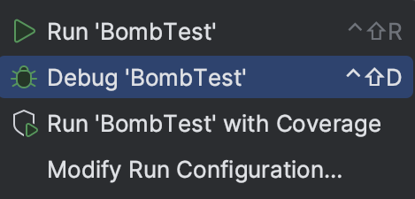
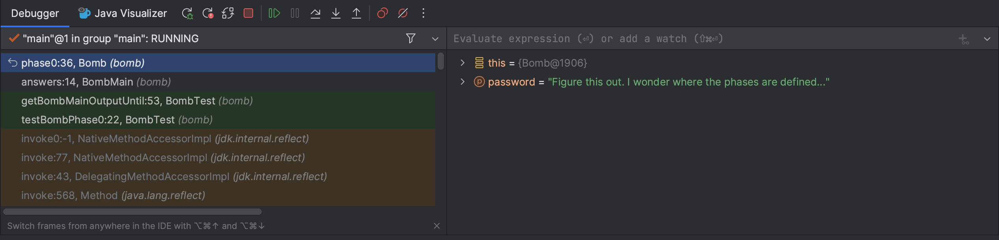
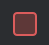

实验 02：调试（第一部分）
常见问题
每个作业都会有一个链接在顶部的常见问题。您也可以通过在 URL 末尾添加 "/faq" 来访问。 实验 02 的常见问题位于 此处 。
简介
要调试程序，您必须首先知道问题是什么。在本实验中，您将获得一些使用调试器查看程序状态的经验。当您遇到 bug 时，错误会伴随一个"堆栈跟踪"，详细说明导致错误的方法调用。我们不会在本实验中介绍如何阅读堆栈跟踪，但我们在后面的实验中会详细讨论。
设置
请按照 作业工作流程 来获取作业并在 IntelliJ 中打开它。
目标与成果
在本实验中，您将通过拆除一个（程序化的）炸弹来提高代码调试能力。我们将引导您完成这个过程，但目的是使这成为一个真实的调试体验。
在本实验结束时，您将能够……
- 使用调试器和可视化工具检查程序状态。
- 能够解释测试失败消息。
- 更好地掌握调试代码的方法。
对于本实验和整个课程，我们强烈鼓励您先自己尝试，包括在不确定某些内容时查找资料。在本实验中，这可能是关于某个错误含义或抛出的异常——请用谷歌搜索！
Bomb
BombMain
类调用
Bomb
类的各种
phase
方法。
在本实验中，我们将通过
BombTest.java
中的测试来运行实验。
如果您运行
BombTest
（在测试文件夹中），您会注意到有一些错误 -
这是因为
BombMain
中 phase 方法的当前输入不是正确的密码！您的工作是通过
使用 IntelliJ 调试器
来找出每个阶段的密码。
警告
：代码的编写方式使您无法仅通过阅读来找到密码。在本实验中，
禁止
编辑
Bomb
和
BombTest
代码，无论是添加打印语句还是以其他方式修改它。本练习的目的是让您熟练使用那些在未来会对您有很大帮助的工具。请认真对待！
如果您修改这些文件，您将无法通过自动评分器上的测试！
如前所述，您将从测试文件夹中的
BombTest.java
运行代码，
您可以使用这些测试来帮助您调试，就像其他作业一样，您将编写自己的测试来帮助您修复错误！
您唯一需要修改的文件是
BombMain.java
BombTest.java
是您将运行程序的地方。
Bomb.java
和
BombMain.java
不会有绿色的运行按钮，因为它不包含
static void main(String[] args)
，
所以请确保通过
BombTest.java
运行程序！
交互式调试
到目前为止，您可能已经通过使用打印语句来练习调试，以查看程序运行时某些变量的值。当放置得当时，打印输出可能有助于使错误变得明显或缩小其原因范围。这种方法称为 打印调试 。虽然打印调试可能非常有用，但它有一些缺点：
- 它需要您修改代码，之后还要清理。
- 决定和写出您想要打印的内容是很乏味的。
- 打印的格式并不总是很好。
在本实验中，我们将向您展示一种新技术， 交互式调试 - 使用交互式工具（即调试器）进行调试。我们将重点介绍 IntelliJ 内置的调试器。
调试器概述
断点
在启动 IntelliJ 调试器之前，您应该设置一些 断点 。 断点标记代码中的位置，您可以在调试时 暂停 程序并检查其状态。这样做：
- 不需要您修改代码或在之后清理，因为断点在正常执行中被忽略。
- 让您看到 所有 变量，而不需要编写打印语句。
- 让 IntelliJ 以结构化方式显示所有内容
继续打开
Bomb.java
并设置一个断点。要设置断点，请单击行号右侧的区域。

您单击的地方应该出现一个红色圆圈或菱形。如果没有出现， 请确保单击代码行旁边。当调试器到达程序中的这一点时， 它将在执行该行或方法 之前 暂停。再次单击断点将删除它。
运行调试器
现在，让我们设置一些断点——您可以在
Bomb.java
或
BombMain.java
中进行此操作。
设置好之后，我们可以开始调试会话！单击要调试的类或测试旁边的绿色三角形
（在测试文件中可能有两个绿色三角形）。不要单击绿色三角形运行，而是单击
 调试选项：
调试选项：

所选程序应运行直到遇到第一个断点。调试器窗口也应出现在界面底部， 即控制台所在的位置。

在左侧，您将看到所有当前的方法调用；在右侧，您将看到程序中该位置实例化变量的值（它们也会在编辑器中以灰色文本显示）。对于类的实例，您可以单击下拉列表展开它们并查看其字段。
在调试器中，您有几个选项：
-
从显示的值中了解情况，找出问题所在并修复您的错误！单击

停止调试会话。 - 单击 继续程序（直到它遇到另一个断点或终止）。
-
单击
 使程序前进一行代码。
使程序前进一行代码。
-
做类似的事情，但它会进入当前行中调用的任何方法，而
会跳过它。
-
 将使程序前进，直到从当前方法返回之后。
将使程序前进，直到从当前方法返回之后。
-
做类似的事情，但它会进入当前行中调用的任何方法，而
- 如果您不小心单步执行得太远并想重新开始会话，请单击 （至少现在，没有很好的方法可以直接后退）。
炸弹
介绍（第 0 阶段）
对于本实验，如果您想要了解所调试的方法/阶段的概述，我们将提供方法分解。
在
phase0
处设置一个断点，并使用调试器找到
phase0
的密码，然后相应地替换
bomb/BombMain.java
中的
phase0
参数。您可以从
tests/bomb/BombTest.java
中的
testBombPhase0
开始程序。
一旦您找到了正确的密码，运行代码（不在调试模式下）应该输出
You passed phase 0 with the password \<password\>!
，而不是
Phase 0 went BOOM!
phase0
方法分解
phase0
方法分解
phase0
方法首先生成一个秘密字符串
correctPassword
（您不需要了解
shufflePassword
是如何工作的）。然后将来自
BombMain
传入的
password
与
correctPassword
进行比较。这个阶段的目标是
使用调试器找到
correctPassword
的值，并传入一个与该值匹配的
password
！
可视化工具（第 1 阶段）
在本实验的這一部分，我们将使用
IntList
。如果您需要快速回顾，
请参阅本周的相关讲座幻灯片。
在我们的
IntList
实现中还有两个可能没有提到的方法：
print
和
of
。
of
方法使创建
IntList
更加方便。下面是它如何工作的简要演示。请考虑以下代码：
IntList lst = new IntList(1, new IntList(2, new IntList(3, null)));
对于只有 1、2 和 3 的列表来说，这需要输入太多内容（也相当令人困惑）！
IntList.of
方法解决了这个问题。要创建包含元素 1、2 和 3 的 IntList，您只需输入：
IntList lst = IntList.of(1, 2, 3);
另一个方法
print
返回 IntList 的
String
表示。
IntList lst = IntList.of(1, 2, 3);
System.out.println(lst.print())
// 输出：1 -> 2 -> 3
回到调试——虽然能够看到变量值很好，但有时我们有的数据并不容易检查。例如，要查看长的
IntList
，我们需要点击很多下拉菜单。Java Visualizer 以箱线图形式显示程序中变量的结构，这更适合
IntList
。要使用可视化工具，请在断点处停止调试器，然后单击"Java Visualizer"选项卡。该选项卡在下面的红色轮廓中。

第 1 阶段的密码是一个
IntList
，而不是
String
。您可能会发现
IntList.of
方法很有帮助。
在
phase1
处设置一个断点，并使用 Java Visualizer 找到
phase1
的密码，
然后相应地替换
bomb/BombMain.java
中的
phase1
参数。您可以从
tests/bomb/BombTest.java
中的
testBombPhase1
开始程序。
phase1
方法分解
phase1
方法分解
phase1
方法生成一个名为
correctIntListPassword
的秘密
IntList
（与上一阶段类似，您不需要了解
shufflePasswordIntList
是如何工作的）。
然后将来自
BombMain
的（以
IntList
形式）
password
与
correctIntListPassword
进行比较以判断相等性。这个阶段的目标是使用调试器的 Java Visualizer 找到
correctIntListPassword
的 IntList 的结构和值，
并传入一个与它匹配的
password
！
条件断点（第 2 阶段）
考虑一个循环 5000 次的程序——尝试逐步调试每次找到错误效率不会太高。相反，您会希望程序在特定迭代时暂停，例如最后一次。换句话说，您会希望程序在某些条件下暂停。为此，请在感兴趣的行处创建一个断点，然后右键单击断点图标本身打开"编辑断点"菜单。在那里，您可以输入一个布尔条件，使得程序仅在条件为真时才会于此断点处暂停。它看起来像这样：

您还可以为 Java 中的异常设置断点。如果您的程序崩溃，您可以让调试器在抛出异常的地方暂停，并显示程序的状态。为此，请在调试器窗口中单击 ，然后按加号创建"Java 异常断点"。在出现的窗口中，输入程序抛出的异常名称。
在
phase2
处设置一个断点，并使用调试器找到
phase2
的密码，
然后相应地替换
bomb/BombMain.java
中的
phase2
参数。请记住，不要编辑
Bomb.java
！您可以从
tests/bomb/BombTest.java
中的
testBombPhase2
开始程序。
注意 ：密码不像前几个阶段那样明确给出。相反，您的任务是使用条件断点来"尝试找到它"。
phase2
方法分解
phase2
方法分解
phase2
方法从
BombMain
接收您的
password
。
该方法将 100,000 个随机整数添加到一个名为
numbers
的
Set
中。然后它使用 for-each 循环遍历它们，
同时递增一个变量
i
。在第 1338 次迭代时（因为 Java 是零索引的，
所以在迭代 1338 时
i == 1337
），我们检查您的密码是否等于当前的
number
。
此时，您应该能够运行
tests/bomb/BombTest.java
中的测试，
并让所有测试都通过，显示绿色勾号。
交付成果与评分
确保您没有编辑
Bomb.java
或
BombTest.java
。
自动评分器上有测试检查您是否编辑了这些文件，
如果文件有更改，您将无法通过（包括添加注释）。
本地测试阻止您编辑
Bomb.java
，但不阻止您编辑
BombTest.java
（这仅在自动评分器上），
因此请勿触碰这些文件！
本实验满分 5 分。
-
在
BombMain.java中找到所有密码，并确保在本地通过所有测试后再提交到 Gradescope。
提交
就像在实验 1 中一样，将实验 2 代码添加到 GitHub。然后，提交到 Gradescope 测试您的代码。如果您需要复习，请查看 实验 1 说明 和 作业工作流程指南 中的说明。
致谢
本作业改编自 Adam Blank。